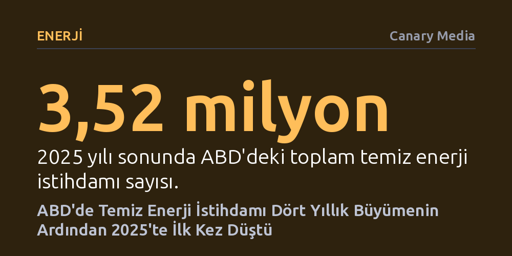

ENERJI · Canary Media · 2026-10-17
ABD'de temiz enerji istihdamı, federal teşviklerin kaldırılması ve sektördeki daralmayla 2025'te dört yıl sonra ilk kez 37 bin kişi geriledi. Kurulumlar rekor kırsa da iptal edilen 150 proje, beklenen 85 bin yeni işi engelledi.
Yenilenebilir enerji kurulumları rekor kırsa bile, federal teşviklerin geri çekilmesinin istihdamı hızla eritebildiğini ve geleceğe dönük sanayi yatırımlarını başlamadan durdurabildiğini gösteriyor.

ABD temiz enerji sektörü, dört yıl boyunca devam eden kesintisiz istihdam artışının ardından 2025 yılında ilk kez gerileme kaydetti. İş dünyası odaklı çevre savunuculuğu kuruluşu E2 tarafından federal iş gücü verileri üzerinden yapılan yeni bir analize göre, ülke genelindeki temiz enerji istihdamı bir önceki yıla kıyasla yaklaşık 37 bin kişi azalarak 2025 sonunda 3,52 milyona indi.
Bu gerileme, sektörün toplam iş gücünün yaklaşık yüzde 1'ine karşılık gelse de yarattığı tahribat çok daha derin oldu. Zira söz konusu kayıp, sektörün bir önceki yıl elde ettiği toplam istihdam artışının yaklaşık yüzde 40'ını tek bir yılda silmeye yetti.
İstihdamdaki bu düşüş, sahadaki kurulu güç rakamlarıyla çarpıcı bir tezat oluşturuyor. Donald Trump yönetiminin ikinci döneminde yenilenebilir enerjiye ve elektrikli araçlara dönük federal politikalarda sert engeller getirilmesine rağmen, temiz enerji santrali kurulumları Biden döneminden devralınan güçlü ivmeyle rekor seviyelerde kalmayı sürdürdü. Güneş enerjisi ABD'de yeni inşa edilen santraller arasında ilk sıradaki yerini korurken, onu bataryalar ve rüzgâr enerjisi takip etti. Ayrıca batarya, güneş paneli ve hücre üretimini ülkeye geri kazandıran yeni fabrikalar da üretime geçmeye devam etti.
Ancak tablonun bütününe bakıldığında kritik bir ayrıntı dikkat çekiyor: 2024 ile 2025 yılları arasında yalnızca temiz enerji değil, ABD genel enerji sektöründeki toplam istihdam da düşüş gösterdi. Temiz enerjideki iş kayıplarının genel enerji istihdamındaki payla neredeyse birebir örtüşmesi, bu düşüşün sadece temiz enerjiye dönük siyasi baskılardan değil, enerji sektörünün genelindeki daha geniş ekonomik dinamiklerden de kaynaklanmış olabileceğini düşündürüyor.
Genel enerji eğilimleri etkili olsa da yaşanan iş kayıplarının federal politikaların doğrudan hedef aldığı alanlarla birebir örtüşmesi tesadüf değil. 2025 yılının ortasında Kongre'deki Cumhuriyetçi çoğunluk tarafından kabul edilen 'One Big Beautiful Bill Act' adlı yasa, yaklaşık on yıl daha sürmesi öngörülen yenilenebilir enerji vergi indirimlerini ve vatandaşların evlerini ile araçlarını elektrikli hale getirmesini sağlayan tüketici teşviklerini yürürlükten kaldırdı. Eş zamanlı olarak yürütme organı, yerel toplulukların verimlilik ve temiz enerji yatırımları için Kongre tarafından tahsis edilmiş milyarlarca dolarlık fonu dondurdu veya geri çağırdı.
Bu adımlar alt sektörlerde farklı şiddetlerde hissedildi. Söz konusu bütçe yasasının Eylül 2025'te elektrikli araç vergi indirimlerini sonlandırmasıyla birlikte otomobil üreticileri elektrikli araç hedeflerinden geri adım attı; üretim hatlarını kapattı ve batarya yatırımlarını şebeke depolama ürünlerine yönlendirdi. Bunun sonucunda temiz ulaşım alanı, yüzde 2,4'lük (9.619 kişi) düşüşle oransal olarak en büyük istihdam kaybını yaşayan alan oldu. Fon kesintilerinden ağır darbe alan enerji verimliliği alt sektörü ise 21 binden fazla kayıpla sayısal olarak en büyük düşüşü yaşadı. Buna karşılık, bütçe yasasında vergi indirimlerini koruyan ve iki partili desteğe sahip olan depolama ve şebeke modernizasyonu alanı yüzde 3,2 büyüyerek dönemin en parlak noktası oldu.
Açıklanan federal veriler mevcut istihdamdaki erimeyi ortaya koysa da madalyonun görünmeyen çok daha kritik bir yüzü bulunuyor: Trump yönetiminin temiz enerjiye yönelik baskıları nedeniyle hiç doğmadan yok olan istihdam potansiyeli. E2 verilerine göre temiz enerji şirketleri, 2025 yılı boyunca üretim, santral inşası ve depolama alanlarındaki yaklaşık 150 projeyi ya tamamen iptal etti ya da küçültmek zorunda kaldı.
Eğer bu yatırımlar hayata geçebilseydi, sektörde yaklaşık 85 bin yeni iş imkânı yaratılacaktı. Siyasi öngörülemezliğin ve teşvik iptallerinin faturası, sadece mevcut çalışanların işini kaybetmesiyle sınırlı kalmayıp ABD'nin geleceğe dönük temiz sanayi hamlesini ve teknolojik liderliğini de ciddi biçimde sekteye uğratıyor.